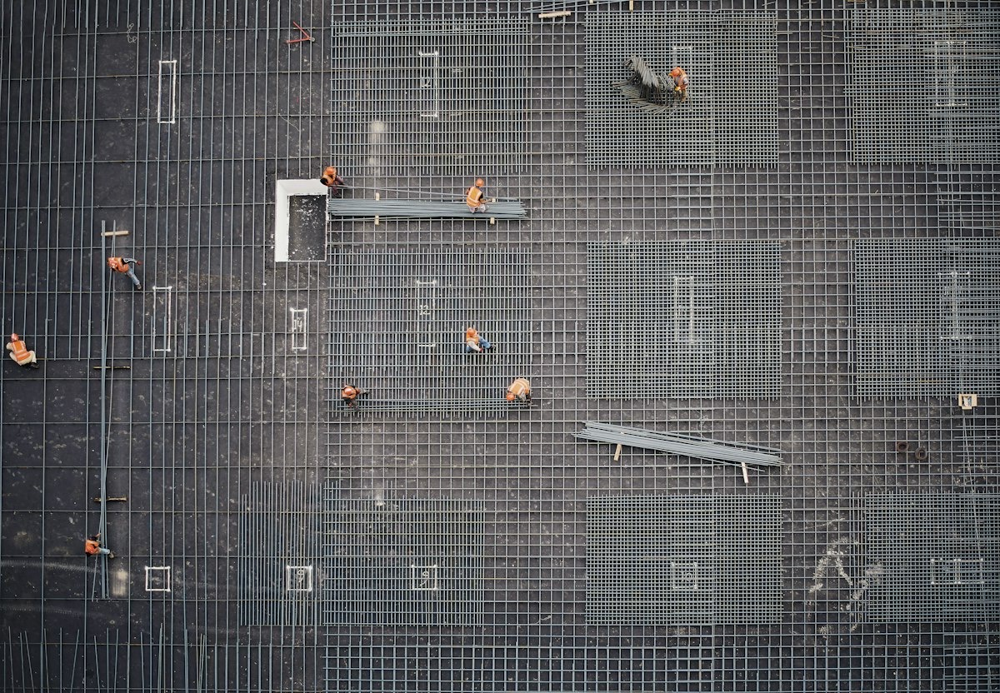
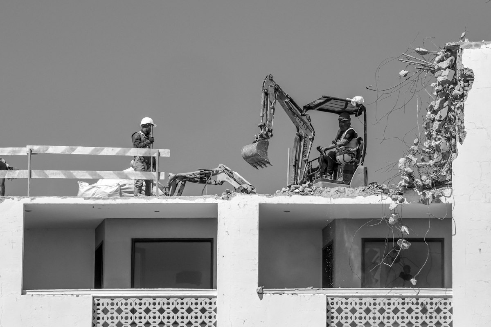
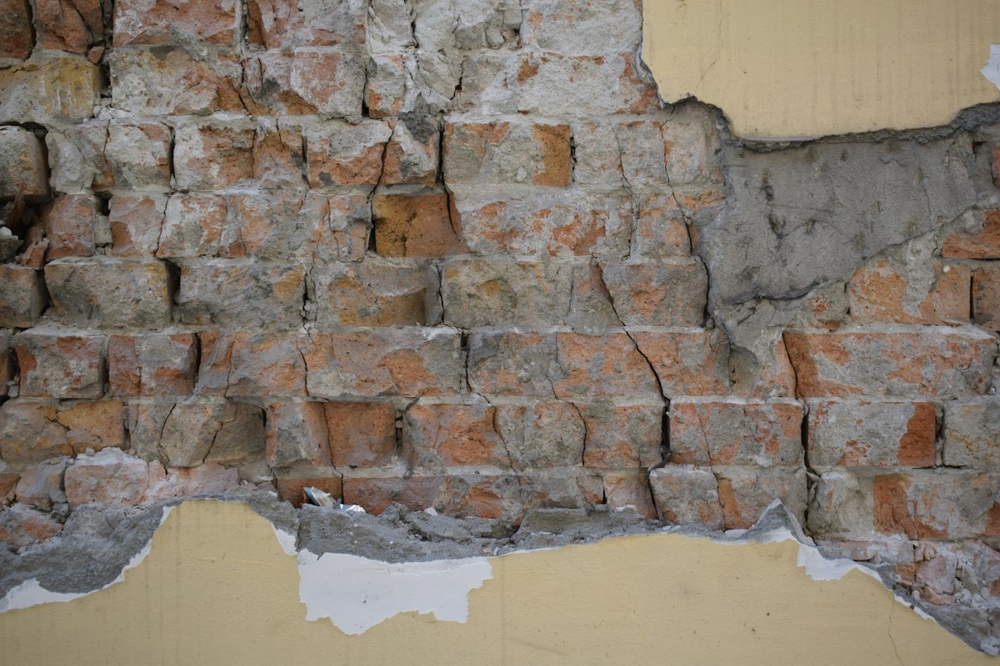
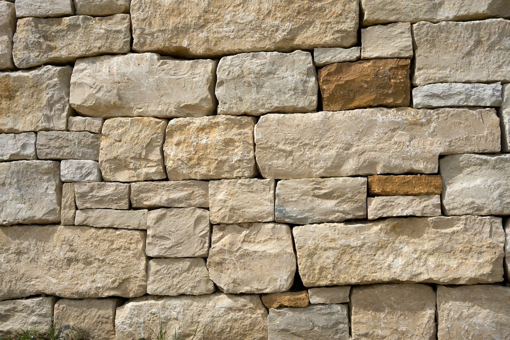
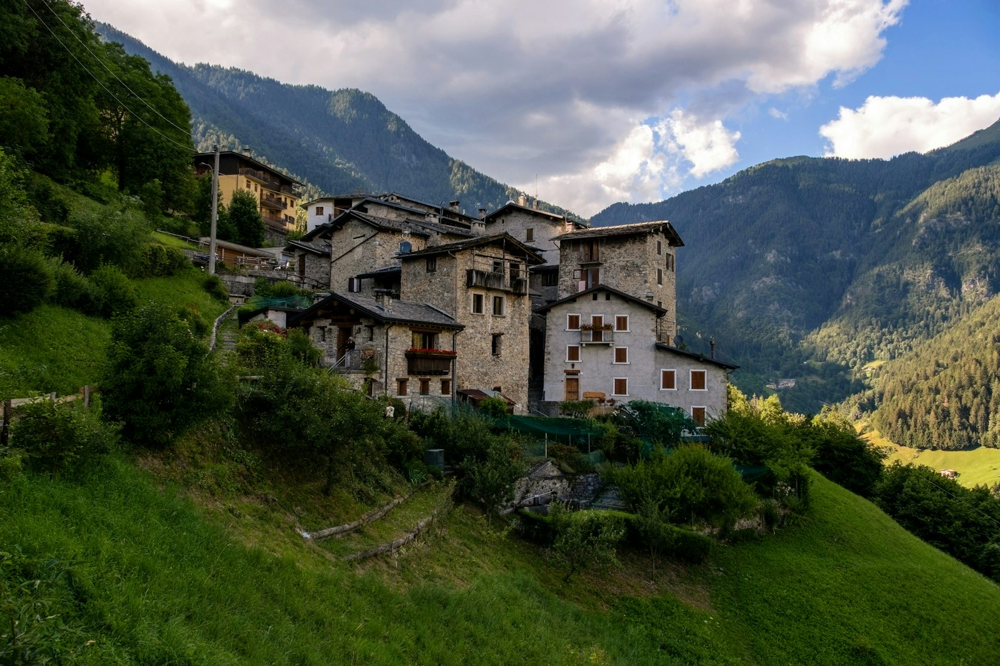

Impresa edile · Scareglia, Val Colla · dal 2019
Boscacci & Giamboni
Costruzioni e lavori edili in genere. Dallo scavo al tetto, dalla ristrutturazione alla riparazione di un'infiltrazione d'acqua, nel Luganese.
4,6 / 524 recensioni su Google
Dal 2019società in nome collettivo, Lugano
7.00 alle 18.00dal lunedì al venerdì
2 sociBryan Boscacci e Davide Giamboni
Cosa facciamo
Una piccola ditta, tanti mestieri.
Costruiamo, ristrutturiamo e manteniamo stabili. Lavoriamo con i committenti nel modo migliore possibile e scegliamo fornitori che sappiano consigliare.
- 01
Sottostrutture e soprastrutture
Casseratura, posa dell'acciaio d'armatura, getti in calcestruzzo, cappe di sottofondo.
- 02
Ristrutturazioni e trasformazioni
Rinnovo di case e appartamenti, risanamenti e restauri, intonaci e pittura.
- 03
Manutenzione e infiltrazioni d'acqua
Ricerca della causa e riparazione delle infiltrazioni, manutenzione di stabili.
- 04
Demolizioni e smantellamenti
Muratura, cemento armato, metallo e legno. Rimozioni, sgomberi e bonifiche.
- 05
Scavi, sterri e canalizzazioni
Scavi e sterri, canalizzazioni, pavimentazioni esterne, posa di elementi prefabbricati.
- 06
Muratura in pietra o cotto
Muri in pietra e in cotto, come si costruisce da sempre nelle nostre valli.
- 07
Bonifiche forestali e taglio alberi
Sistemazioni forestali, taglio di alberi e pulizia del terreno prima del cantiere.
Dallo scavo al tetto
Sotto e sopra terra, la stessa squadra.
Sottostruttura e soprastruttura sono il nostro mestiere. Un solo interlocutore per tutto il cantiere.
- 01Scavo e sterro
- 02Canalizzazioni
- 03Fondazione, casseri e armatura
- 04Muratura in pietra o cotto
- 05Solaio e copertura
- 06Intonaco e pittura
06 / 06 Intonaco e pittura
Cantieri
Il lavoro, fotografato dal cantiere.
Foto indicative. Qui vanno le foto dei vostri cantieri, anche quelle già pubblicate su Instagram.





La ditta
Due soci, una parola data.
Boscacci & Giamboni nasce nel 2019 a Scareglia, in Val Colla, sopra Lugano. Siamo una piccola ditta: parlate direttamente con i due titolari.
- Bryan Boscaccisocio
- Davide Giambonisocio
Come lavoriamo
Dal primo messaggio alla consegna.
- 01
Ci scrivete
Un messaggio, una foto del problema o una chiamata.
- 02
Sopralluogo
Vediamo il lavoro di persona, prima di parlare di cifre.
- 03
Preventivo gratuito
Un preventivo scritto, senza impegno.
- 04
Lavori
Su misura, con i fornitori giusti e con attenzione ai dettagli.
Contatto
Raccontateci il lavoro.
- Telefono e WhatsApp079 962 22 70
- Emailinfo@boscacci-giamboni.ch
- SedeVia Cantonale 9
6951 Scareglia (Lugano) - OrariLunedì a venerdì, dalle 7.00 alle 18.00